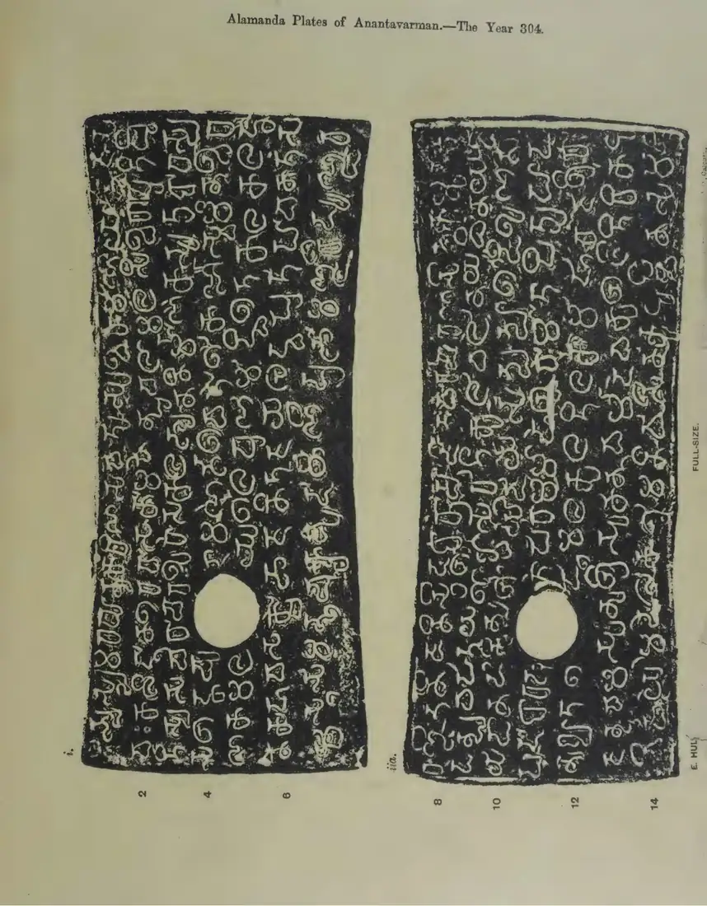
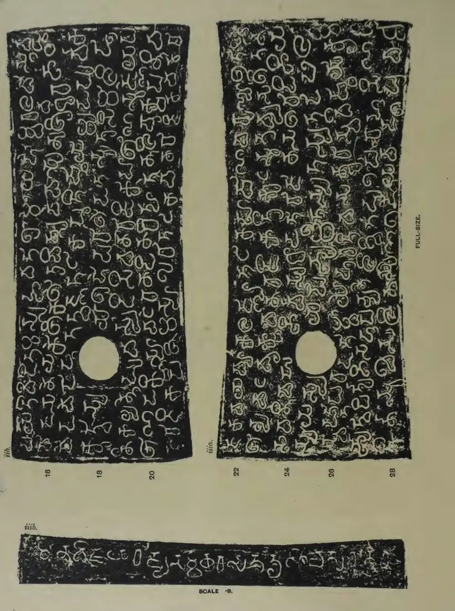

Alamaṇḍa plates of Anantavarman
No. 3.— ALAMANDA PLATES OF ANANTAVARMAN.
By E. HULTZSCH, PH.D.
This inscription is engraved on three copper-plates of about 7½ by 3 inches, which were “found underground while excavating a site near Alamanda in the Śrîngavarapukôṭa tâlukâ of the Vizagapatam district,” and kindly transmitted to me by the Collector, Mr. W. A. Willock, I.C.S. The plates are strung on a plain ring, which had been cut before I received them, and which measures about ¾ inch in thickness, and 4½ inches in diameter. The weight of the plates is about 1 ¾ oz., and that of the ring about 9 oz., total about 2 ¾. The rims of each side of the plates are slightly raised in order to protect the writing, which is in nearly perfect preservation. The alphabet closely resembles that of a copper-plate grant of Dêvêndravarman, the son of the Mahârâja Anantavarman, which was published with a facsimile by Dr. Fleet.6 The language is very incorrect Sanskrit, and is prose throughout, with the exception of two imprecatory verses (lines 24-27).
1 I have translated vâra by ‘week,’ a meaning which it has in Tamiî and Kanarese, as two weeks (i.e. fourteen days) would better correspond to the fourteen worlds which are referred to in the second half of the verse, than two days. In Sanskrit vâra means only ‘a week-day.’
2 See p. 14 above, note 9.
3 In the panegyrical introductions of the Tamiî inscriptions of the Pândya kings, it is stated that their banner, the two fishes, fluttered (i.e. had been planted as a memento of conquest) on Mount Mêru. See, e.g., line 4 f. of the Tirupparankunṇam cave-inscription of Mâravarman, alias Sundara-Pândyadêva (Ind. Ant. Vol. XXI. p. 344):— Por-kiri mêl vari-kkayalgal vilaiyâda, “while the spotted carps were sporting on the Golden Mountain.”
4 Vishnu, whose body is of dark colour, corresponds to the cloud, Lakshmî to the lightning, and the throne to the golden mountain Mêru. Compare verses 9 and 19.
5 This refers to the crowns of the Pândya, Chôla and Chêra kingdoms. Compare Mummudi-Chôladêva, ‘the Chôla king (who wears) three crowns,’ which was a surname of the great Râjarâja; South-Indian Inscriptions, Vol. II. p. 139, note 1, and p. 222, note 4.
6 Ind. Ant. Vol. XVIII. pp. 143 ff.
The inscription records the gift of the village of Mede[lá]ka in the Tirikaṭu-vishaya (line 13 f.) to a Brāhmaṇa of the Vājasanēya school (l. 16). The grant was made at Kalingānagara1 (l. 2) on the day of a solar eclipse (l. 18) in “the three-hundred-and-fourth year of the reign of the G[á]ngēya race” (l. 28 f.). The donor was king Anantavarman, the son of the Mahārāja Rājendravarman, a member of the Gaṅga family (l. 12 f.) and a worshipper of Mahēśvara (l. 11). The wording of the passage which celebrates the virtues of the king (ll. 1 to 12), is identical with that of the corresponding passage in a copper-plate grant of Dēvēndravarman, the son of the Mahārāja Anantavarman.2 As Dr. Fleet has expressed his intention of treating the chronology of the Gaṅgas of Kalinga,3 I refrain from attempting any conjectures regarding the date of the new inscription, and would only point out that it appears to refer to the same era as the grant of the year 254,4 and that, consequently, the king Anantavarman, by whom the subjoined grant was issued, appears to be distinct from, and later than, another Anantavarman, who was the father of Dēvēndravarman.
TEXT.5
First Plate.
- 1 श्रीं स्वस्थमर[पु][रा*]नुक[ा*]रिण[:*] सर्वतुंसुखरमणीया[द्वि]ज[य]-
- 2 व[त*]: कलिङ्गानगरवासका[त्*] महेन्द्र[ा*]चलामलसिखरप्रतिष्ठि-6
- 3 तिस्य7 सचराचरगुरो[:*] सकलभु[व*]ननिर्माणैकसुत्रधारस्य6
- 4 9सशङ्कचुडामणेर्भगवतो गोकण्णस्व[ा*]मिनश्चर-
- 5 णकमलयुगलप्रणामाद्विगतकलकलङ्गो-10
- 6 नेक[ा]हवसंक्षोभजनितजय[श]द्व11 प्रतापावनतस-
- 7 12मस्तसामन्तचक्रचुदा[म]णिप्रभामण्णुरीपुण्ण(र)-13
Second Plate; First Side.
1 This is probably the modern “Calingapatam;” Ind. Ant. Vol. XVIII. p. 144, and Mr. Sewell's Lists of Antiquities, Vol. I. p. 7.
2 Published by Dr. Fleet, Ind. Ant. Vol. XIII. pp. 273 ff.
3 Ind. Ant. Vol. XVIII. p. 144.
4 See note 6 on previous page.
5 From the original copper-plates.
6 Read शिखर.
7 Read तस्य.
8 Read सूच.
9 Read शशाङ्कचूडा.
10 Read कलिकलङ्गो.
11 Read शब्दः.
12 Read चूडा.
13 Read मञ्चरीपुञ्च.
14 Read रञ्जितनिजनिस्विंश.
15 Read कुन्देन्द्रवदातयशा.
16 Read दाक्षिण्यशौर्यादार्थः.
17 Read संपदाधारभूतः.
18 Read पितृ.
19 Read श्रीरा.
Plate 1 is bound after this page.
Plate 2 is bound after this page.
] कुशली . तिरिकटु-
कुटुम्बिन[:*] सम[ज्णा]-
Second Plat
; Second Side.
15 पयति3 [॥*] विदितमस्तुद्भवता4
16 वाजसनेयकोशिकगोत्रविष्टुदेवसुनु
17 [वै]दवेदाङ्गतत्वज्ज्यतटाकप्रतिष्ठाय
18 क्लवा सूर्यग्रहोपरागो5 दतं [॥*
19 नि कथ्यन्ते [*] पुर्वस्या10 दिसि
20 शाण13 [*] दक्षिणस्या14 चटेर
21 नराजिक[। *] पश्चिमस्या18 गु
ग्रामोयं 5होम्वरवलवास्तव्य-
श्रीधरभ[टं]6
Third Plat
गामुदपुर्वक7
22 जक19 [*] वयव्यां20 कलज्ज्यातट
23 शान्य22 वटवृक्ष[:*] वनर[*]जि
24 [भ]वन्ति [॥*]24वहुभिर्वसुधा
25 स्य यस्य यपा26 भुमी तस्य तस्
26 स्वदत्ता27 परदताम्बा यो हरति
27 र्भुत्वा30 पिर्तुभि सहु पच्यते [॥
28 [त्की]नं32 अखसलिन [अण] [
] अत्र 9सिमालिङ्गा-
त वनराजिका पाशाण11 [*] अज्णेय12 प-
नदि15 [*] नरित्या16 [ते]न्तलिवृक्षपन्ति17 व-
रातटाक[:*] वनराजिक[*] वनरा-
; First Side.
क[:*] पाषाण[: *] वारुण्या21 गर्त[: *] [ऐ]-
क[*] त्रिकुट23 [*] अत्र व्य[*]सगीत[*]नि
दता25 राजान सगरादिभि[: *] य-
य तदा फलं [*]
वसन्धरा26 [*] स्वविष्ठाया29 क्वमि-
*] लिखितं दुगपे[र]हुसिण31 [उ]-
*] ग[*] द्वेयवङ्गप्रवर्ध-33
1 Read 'जन्द्रवमसुनु:.
2 Read वासिन:.
3 Read समाज्ञापयति.
4 Read 'सत्तु भवतां.
19 Read °जिका ; the word वनराजिका appears to be repeated by mistake.
5 The fourth aksharā of होस्वरवत्त्व stands below the line.
20 Read. वायव्यां कलज्ञा.
6 Read कौशिक, विष्णु, सुनु, भट्टाय.
21 Instead of वारुण्या (i.e. वारुण्या, 'in the west'), read उत्तरस्यां.
7 Read वेदवेदाङ्गतत्त्वज्ञाय and 'मुदकपूर्वकं.
22 Read °न्यां.
8 Read सूर्यग्रहोपरागे दत्त:.
23 Read त्रिकूटः.
9 Read सीमा.
24 Read बहु.
10 Read पूर्वस्यां दिशि.
25 Read दत्ता राजभिः.
11 Read पाषाण:.
26 Read यदा भूमिलक्ष्य.
12 Read षाग्रेय्यां.
27 Read स्वदत्तां परदत्तां वा.
13 Read पाषाण:.
28 Read वसुधराम्.
14 The 'ण stands below the line; read 'सां.
29 Read श्रविष्ठायां.
15 Read नदी.
30 Read °भूत्वा पितृभिः सह.
16 Read नैर्ऋत्यां.
31 Read दुर्गप्परहस्येण ?
17 Read पङ्क्ति:.
32 Read उत्क्रीर्णसक्षशाखिना.
18 Read 'सां.
33 Read वंश.
Third Plate; Second Side.
29 म[त]नविजयराज्यसम्बद्धरसत[त]1 तृणि चतु[रो]तरा [॥*]
TRANSLATION.
(Line 1.) Ôm. Hail!
From the victorious residence2 Kalingânagara, which resembles the city of the gods (and) which is pleasant (on account of the simultaneous existence) of the comforts of all seasons,—the devout worshipper of Mahêsvara, who adores the feet of (his) mother and father, the ornament of the spotless family of the Gangas, the son of the glorious Mahârâja Râjèndravarman, the glorious Anantavarmadêva,— who has become a receptacle of wisdom, modesty, compassion, charity, courtesy, bravery, magnanimity, truthfulness, liberality, and other excellent virtues; who has destroyed the principal mountains, (viz. his) enemies; whose fame is as bright as the white water-lily, the jasmine flower and the moon; whose handsome feet3 are reddened by the clusters of the light of the jewels on the crests of all vassals, prostrated by (his) valour; who has caused the cry of “victory” to resound in the turmoil of many battles; (and) who is freed from the stains of the Kali (age) in consequence of (his) prostrations at the lotus-feet of the god Gôkarnasvâmin, whose crest-jewel is the moon,4 who is the sole architect for the construction of the whole world, who is the lord of the animate and inanimate creation, (and) who is established on the sinless peak of the Mahèndra mountain,5— being in good health, addresses (the following) order to the ryots inhabiting the village of Mede[lâ]ka in the district (vishaya) of Tirikaṭu:—
(L. 15.) “Be it known to you (that), at the consecration of a tank, (which took place) at an eclipse of the sun, this village was given, with libations of water, to Vishṇudêva’s son Śrîdhara-Bhatta, of the Vâjasanêya (sâkhâ) and the Kauśikâ gôtra, who resides at Hom-varavala, (and) who thoroughly knows the Vêdas and Vêdângas.
(L. 18.) “The marks of the boundaries of this (village) are declared (as follows):— In the eastern direction, a row of jungle-trees (and) a rock; in the south-east, a rock; in the south, the Chatera river; in the south-west, a group of tamarind-trees6 (and) a row of jungle-trees; in the west, the Gurâ tank (and) a row of jungle-trees; in the north-west, the Kalajñâ tank (and) a rock; in the north, a trench; in the north-east, a banyan-tree, a row of jungle-trees (and) a trikûṭa7.
1 Read संवक्षरशतानि चौणि चतुरीचराणि.
2 In this and other Ganga grants, vâsaka appears to be used in the sense of râjadhânt.
3 In line 8 of this inscription, and in line 7 of one of the inscriptions published by Dr. Fleet (Ind. Ant. Vol. XIII. p. 275), the word निजनिखिशधारीपार्जित is erroneously inserted before वरचरण:. Another of Dr. Fleet’s inscriptions (Ind. Ant. Vol. XIV. p. 11, text line 11) shows that, in the original draft of the introduction of the Ganga grants, the word formed part of a compound which stood before परममाहेश्वर:.
4 i.e. the god Śiva.
5 The Mahèndra mountain is frequently mentioned in the epic poems; see Böhtlingk and Roth’s Sanskrit Wörterbuch, s. v. In the Raghuvaṁśa (vi. 54), the king of Kalinga is called ‘the lord of (Mount) Mahèndra.’ General Sir A. Cunningham (Ancient Geography of India, Vol. I. p. 516) has identified the term with the Mahèndramala range, which divides Gañjâm from the valley of the Mahânadî. Consequently, the temple of Gôkarnasvâmin, which was situated on the Mahèndra mountain, must be distinct from the well-known shrine in the North Canara district. According to Mr. Sewell’s account (Lists of Antiquities, Vol. I. p. 5), the Mahèndragiri is now included in the Mandasa zamîndârî and bears on its summit, 4,923 feet above the sea, four temples. The highest of these is built of very large granite blocks and dedicated to Śiva. This is perhaps the Gôkarnasvâmin of the Ganga grants. In the “Madras Mail” of the 29th May 1893, Mr. Duncan states that the top of the Mahèndragiri hill is 17 miles distant from the Haripur station of the East Coast Railway.
6 तेन्नलि is the same as तिन्निडी in the Amarakôśa, and as तिन्निणि in the Telugu and Kamarese dictionaries.
7 The same term occurs in Ind. Ant. Vol. XVII. p. 174 f., text line 36f. Its meaning might be ‘the point at which three roads meet.’
(L. 23.) “With reference to this (subject), there are (the following) verses of Vyāsa:—”
[Here follow two of the customary verses from the Mahābhārata.]
(L. 27.) (This edict) was written by the private secretary (rahasya)1 Durgappa (?) (and) engraved by the keeper of records (akshaśālin)
(L. 28.) (In) the year three hundred and four of the prosperous and victorious reign of the G[ā]ngėya race.
1 The same official title occurs in Ind. Ant. Vol. XIV. p. 12, and Vol. XVIII. p. 145, and the slightly different form rahaśika (for rahasyaka), Vol. XIII. p. 121.

